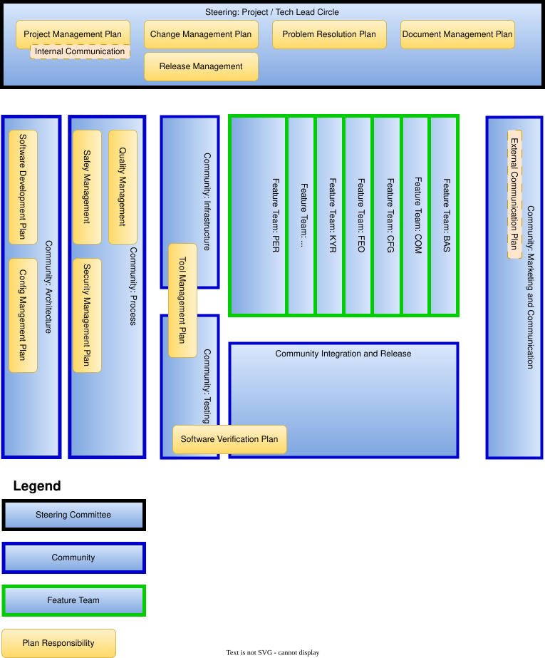
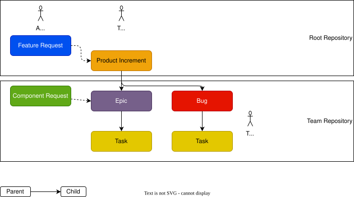
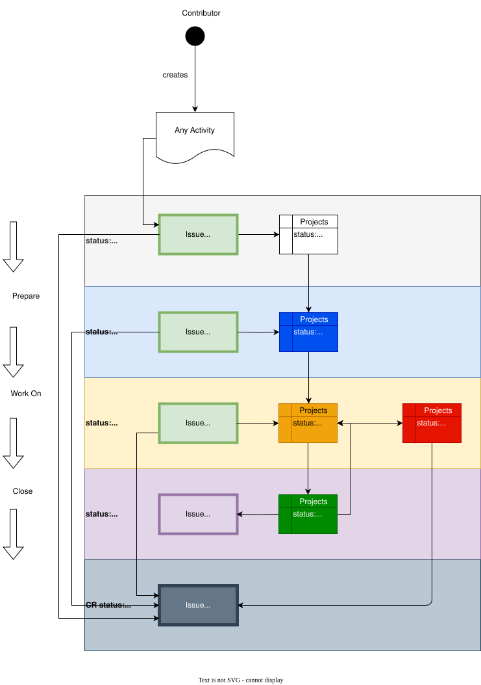
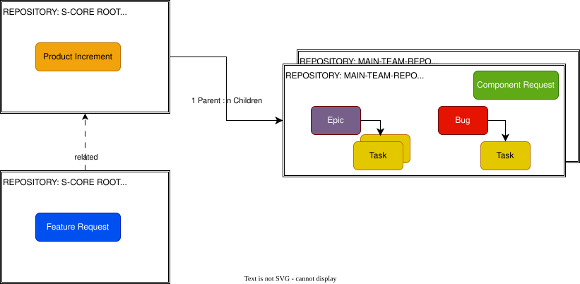
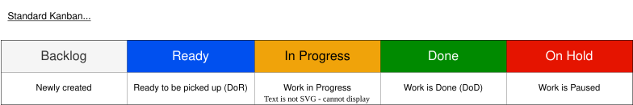
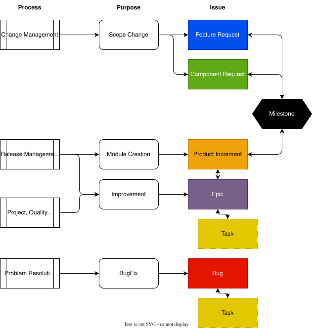

Project Management Plan
|
status: valid
security: YES
safety: ASIL_B
|
||||
Project Management Plan#
Purpose#
The purpose of the Project Management Plan is to define
how to manage, analyse and control changes of the work products during the project life cycle.
the project stakeholder and how to communicate with them.
how and where to create and maintain the project schedule.
how to track planned work.
how and where to escalate.
Objectives and Scope#
Project Management Goals and Definition of Done#
- The stakeholders/stakeholder groups and organization are defined:
Org Chart and structure description is available and up to date.
- Communication and reporting paths are described:
Team Overview with meeting structure is available & Slack channels are established and maintained.
Meetings are scheduled in the Eclipse SDV calendar.
- The scope of the work is defined.
S-CORE Handbook (Handbook (doc__platform_handbook)) is available and up to date.
Features are described.
- Project Plan is planned and followed:
Roadmap with Milestones and Releases are available and up to date.
Features are described.
Escalation paths are described.
All Reviews are performed according to their definitions, the respective templates are used.
Project Organization#
Org Chart and Main Platform Management Plan Responsibilities#
{kind=link}

Steering Committees#
Steering of the project is done with the help of Lead Circles.
Purpose |
Members |
Speaker |
Meeting Minutes |
Slack Channel |
Backlog |
Owned Repository |
|---|---|---|---|---|---|---|
PLC/TLC |
Project/Technical |
Lead |
Circle |
———– |
———– |
———————– |
|
Communities#
Communities are installed to work on cross functional topics, such as program level architectural decisions, commonly used development & testing infrastructure, processes or final integration & release. Each Community has a Community Lead to organize the community`s work.
Purpose |
Members |
Lead |
Meeting Minutes |
Slack Channel |
Backlog |
Owned Repository |
|---|---|---|---|---|---|---|
ARC |
Architecture |
Community |
———– |
———– |
———– |
———————– |
|
||||||
PRC |
Process |
Community |
———– |
———– |
———– |
———————– |
|
||||||
INF |
Infrastructure |
Community |
———– |
———– |
———– |
———————– |
|
Toolchain Repositories:
Tooling Repositories:
other Repositories:
|
|||||
TST |
Testing |
Community |
———– |
———– |
———– |
———————– |
defining and maintaining testing strategy and infrastructure |
||||||
INT |
Integration & |
Release |
Community |
———– |
———– |
———————– |
|
||||||
MCM |
Integration & |
Release |
Community |
———– |
———– |
———————– |
|
Feature Teams#
Feature Teams have end-to-end responsibility for providing specific functionalities. This includes all development aspects beginning with the architecture definition to the integration test. One Team may work independently of other Teams on the team-assigned GitHub Issues, and needs at least one rl__committer who can approve & merge the Pull Requests. Each Feature Team has one Lead to organize the Team`s work.
Purpose |
Members |
Lead |
Meeting Minutes |
Slack Channel |
Backlog |
Owned Repository |
|---|---|---|---|---|---|---|
BAS |
Baselibs |
Feature |
Team |
———– |
———– |
———————– |
|
||||||
COM |
Communication |
Feature |
Team |
———– |
———– |
———————– |
|
||||||
CFG |
Configuration |
Management |
Feature |
Team |
———– |
———————– |
|
||||||
FEO |
Fixed |
Execution |
Order |
Feature |
Team |
———————– |
|
||||||
KYR |
Kyron |
Feature |
Team |
———– |
———– |
———————– |
|
||||||
LOG |
Logging |
Feature |
Team |
———– |
———– |
———————– |
|
||||||
LCM |
Lifecycle |
Management & |
Health Monitoring |
Feature |
Team |
———————– |
|
||||||
OCR |
Orchestrator |
Feature |
Team |
———– |
———– |
———————– |
|
||||||
PER |
Persistency |
Feature |
Team |
———– |
———– |
———————– |
|
Organization Management#
Decision to adapt the Project Organization is done in the Technical Lead Circle / Project Management Circle, documented in the meeting minutes and planned with a Task:
creating of a new Team (Community or Feature Team)
setting an existing Team (Community or Feature Team) on hold
deleting an existing Team (Community or Feature Team)
Creation of a new Feature Team#
In case a new Feature Team creation is necessary, the following steps have to be done:
Adding a new Team to GitHub Teams and adding the Core Members by editing orgs.newTeam.
Adding a new Repository to GitHub by editing orgs.newRepo.
Definition of Repository specific CODEOWNERS.
Creation of a Team GitHub Project with a Kanban View and a Task View.
Creation of a Team Meeting Wiki for the meeting minutes
Creation of a Team Label
committee:<Name of Committee>,
community:<Name of Community> or
ft:<Name of Feature Team>
Creation of a Slack Channel: https://sdvworkinggroup.slack.com
Adapting the PMP
External Communication#
The external communication is done via GitHub, LinkedIn, etc. Publications by Marketing and Communication Community.
Internal Communication#
The project internal communication is ensured with help of:
virtual and face-to-face meetings and their minutes
GitHub issues and GitHub pull requests
online communication using Slack
Meetings#
All meetings are scheduled in the Eclipse S-CORE Calendar , are open for everyone but mentioned team members are mandatory. Meeting minutes are public and stored in the project specific GitHub Team Wikis.
Repository structure#
The Platform follows a multiple repositories approach. The root repository is
https://github.com/eclipse-score.
It contains among others:
documentation of all platform features, features flags, feature requirements and architecture
build system including S-CORE specific macros and rules
integration rules for software modules.
which are stored in the Folder Structure of Platform Repository.
Every software module has its own repository, that contains among others:
multiple components
their requirements
architecture
implementation
tests
within the following Module Folder Structure.
Codeowners#
While creating a new repository, Project / Technical Leads nominate initial CODEOWNERS, whose review is mandatory for merging PRs to the repository and who are at the end allowed to merge PRs to the repository as well as maintaining it.
Possible members are software developers , who
understand how the particular feature works or should work
are the initial authors of the software
and are rl__committer
The Codeownership has to be regularly updated and changes have to be documented.
Planning & Tracking#
Cadence#
Iteration#
The Project calendar is devided into iterations. Each iteration is two weeks long.
Release Frequence#
After every 3rd iteration, the work is baselined into a Release.
Planning & Tracking Infrastructure#
The planning and tracking of the work is done inside GitHub. GitHub Issues are used to document all necessary work packages.
Issues#
To organize the work Github Types, GitHub Labels and GitHub Projects are used. The Progress of the work is documented with help of the Status of an Issue.
Issues Types#
{kind=link}

Architectural Issues#
Feature Request
A Feature Request represents an independent work package used to describe and track a high-level request for the project. Feature Request work packages can be linked to other work packages, but they must not be treated as parent work packages. Feature Request covers new Features as well as significant modifications of existing Features. They are in the responsibility of the Architecture Community, shall aligned with Project / Technical Lead Circle and the issues are part of the Root Repository.
Feature Request issue template
Component Request
A Component Request represents an independent work package used to describe modifications inside a Feature, either adding new components or modifying existing ones. Component Request work packages can be linked to other work packages, but they must not be treated as parent work packages. They shall be discussed with Architecture Community and the issues are owned by a Team and are part of the Team`s main repository..
Planning Issues#
Product Increment
A Product Increment represents the highest level in the work package hierarchy and cannot be linked as a child of another issue. If you need to group multiple Product Increment work packages, labels have to be used. One Product Increment is the planning element for a version of a Module. A Product Increment can have multiple Epic work packages as children. Product Increments are owned by Project / Technical Lead Circle and are part of the Root Repository.
Product Increment issue template
Epic
An Epic is the primary planning work package for development teams. Epic work packages should be scoped in a way that allows them to be completed within a release cycle of the S-CORE project. While an Epic can be implemented by multiple team members, it is recommended that one developer takes main responsibility for its completion. Quality assurance activities, such as code reviews, can be performed by other team members. Epics are typically grouped under an Product Increment. However, an Epic work package can also exist as a standalone work package if its outcome represents a complete functional improvement, making a related Product Increment work package unnecessary. Sometimes support of other teams might be necessary for the completion of the work, therefore an Epic can have team-internal and team-external Task child issues. Epics are owned by a Team and are part of the Team`s main repository.
Task
A Task GitHub Issue represents the smallest unit of planning and typically corresponds to a concrete piece of work to be completed, such as by a developer. Task work packages are usually grouped under an Epic work package. In certain cases, a Task may exist as a standalone GitHub Issue. However, standalone Task work packages must not be grouped using labels. If multiple Task work packages are related, a Epic work package should be created instead, with all associated Task work packages added as child work packages under that Epic. Tasks are owned by a Team and are part of any Team`s repository.
Bug
A Bug GitHub Issue is used to report any kind of problem or malfunction. It is considered a special type of work package and follows the same rules as regular Epic work packages, with the key difference that it focuses on fixing defects in existing functionality rather than creating or extending functionality. ^Bugs are owned by a Team and are part of any Team`s repository.
Issue Status#
Each GitHub issue has a Status depending on the GitHub Project, we use the following Standard Flow for all Issue Types:
{kind=link}

Issue Attributes#
Issue Templates#
Templates defined in GitHub ensure the availability of the type relevant information for all issues.
Hierarchies#
Hierarchies are realized as parent-child relations with the GitHub Sub-Issue Feature.
Dependencies#
Dependencies are realized with blocked by or blocking relations described in the GitHub Issue Dependency Feature.
Milestone#
A milestone is indicating an important dedicated point in the schedule like a Release or a Process Audit, etc. GitHub Milestones offer to connect Issues and Pull Requests to the S-CORE-defined Milestones
Releases#
Releases are special milestones and used for baselining of the development activities.
Labels#
GitHub Labels are used to organize Issues, Pull Requests etc. having same context. Although Labels are powerful, the definition of new Labels shall be wisely done and organization wide used. Therefore their management is limited to Organization owners.
The following Labels are defined.
GitHub Projects#
The GitHub Project Feature helps to plan the work and monitor its progress.
Multiple GitHub Projects are defined at https://github.com/orgs/eclipse-score/projects/.
Beside one for each (committee, community, feature) Team, there is one for Feature / Component Requests and one for the complete Roadmap. Inside a GitHub Project, there is the possibility to generate different views for Table, Board and Roadmap supporting Backlogs, Open Point or Task Lists and other useful perspectives.
{kind=link}

Kanban View#
The GitHub Board is supporting the Kanban View, enabling to set the Work In Progress Limits.
{kind=link}

Task List View#
The GitHub Table is supporting the List View, enabling to adapt the priority by reordering the rows.
Roadmap View#
The GitHub Roadmap is supporting the Road View, provididing a high-level visualization of your project across a configurable timespan.
Traceability#
To achieve traceability all Pull Requests have to be linked to the corresponding GitHub Issues.
Planning of Work#
Generally, every team is responsible for planning its work within its own plan with the help of its GitHub Project filled with Epics, Tasks and Bugs.
The planning of Feature Requests and Component Requests is in the responsibility of the Architects, whereas the overall top-down plan is in the responsibility of the Project / Technical Lead Circle with the help of Product Increments, Milestones and Releases.
{kind=link}

Tracking Progress#
The Project / Technical Lead Circle regularly monitors the status of the work for upcoming Milestones and Releases in https://github.com/orgs/eclipse-score/projects/17/ based on Product Increments.
Dashboards#
GitHub offers mechanism in form of charts to track issues: